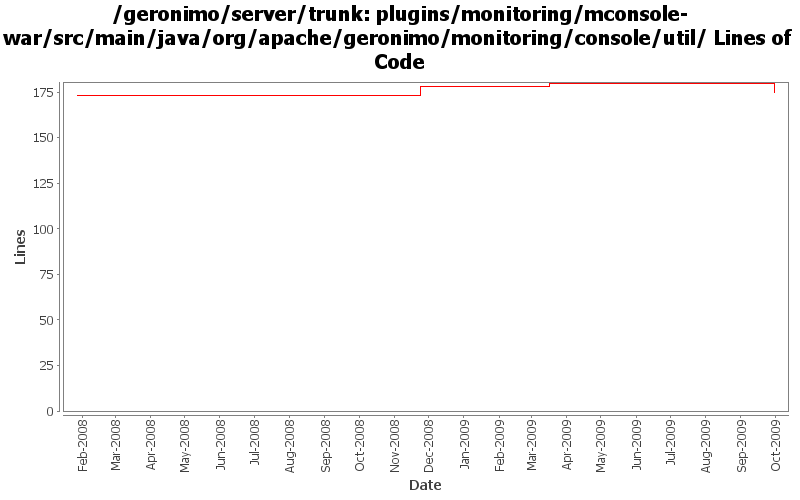

[root]/plugins/monitoring/mconsole-war/src/main/java/org/apache/geronimo/monitoring/console/util

| Author | Changes | Lines of Code | Lines per Change |
|---|---|---|---|
| Totals | 5 (100.0%) | 83 (100.0%) | 16.6 |
| djencks | 1 (20.0%) | 63 (75.9%) | 63.0 |
| xuhaihong | 1 (20.0%) | 16 (19.3%) | 16.0 |
| gawor | 1 (20.0%) | 4 (4.8%) | 4.0 |
| ecraig | 2 (40.0%) | 0 (0.0%) | 0.0 |
GERONIMO-4810 Predefine a "localhost" server with some predefined graphs and views (Patch from Vanessa)
16 lines of code changed in 1 file:
Relax schema to support monitoring of multiple servers running on the same host. Patch from Ashish Jain (GERONIMO-4588)
4 lines of code changed in 1 file:
GERONIMO-4415 use jpa for data access in monitoring console
63 lines of code changed in 1 file:
GERONIMO-3730
monitoring plugin to support jmx connections in mconsole
Implemented UI elements to select connection method
Renamed current mrcconnector class to mrcconnectorejb, in order to add mrcconnectorjmx
added protocol field to database schema
added checks for connection type in monitoring portlet
0 lines of code changed in 2 files: